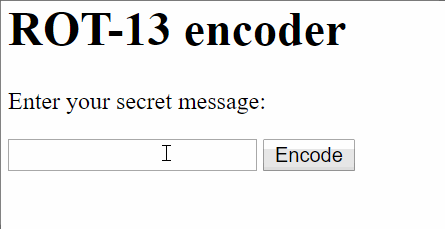

TypeScript
You've gotta be typin' kidding meSections in this chapter
TypeScript intro
The elevator pitch
Understanding what TypeScript is
Question: Do you want your program to crash because of some silly error?
(Not a trick question. But rather an obvious one.)
Answer: Of course not.
In fact, computers are good at finding things.
If you tell them to look out for problems, they do.
Over the past years, the JavaScript community has arrived at a solution to this problem:
Linters.
The most popular linter is called ESLint.
It's successful because it's quite extensible, with a vibrant plugin system, and its type rules are improving with every release.
We can run the linter regularly. It finds potential problems for us.
If we're a team, we can run it on a server, maybe on every push.
Question: Linters are such a great idea. Can we do even better?
Answer: Yes. Yes we can.
Here's the idea of TypeScript:
It's JavaScript... but it detects when you get things wrong.
Question: Seriously?
Why would anyone ever say no to extra help!?
Answer: Indeed, why?
Here's some TypeScript:
let name: string;
When you declare a variable, you can (optionally) constrain it to a type.
You write a colon (:) and the type.
You already know the types. They're JavaScript's types:
stringnumberbooleanundefinednullobject(which in turn is several types)
If you're assigning a value when you're declaring a variable:
let name: string = "Fred";
You can even skip the type annotation, because TypeScript will infer it:
let name = "Fred";
If you ever use your string variable as something else...
Math.floor(name);
...TypeScript will give you an error:
Argument of type `string`
is not assignable
to parameter of type `number`
Almost like a poem.
Question: What if I don't want the typechecking?
Answer: You use the special any type:
let name: any;
any means "don't typecheck this variable".
Browsers don't understand TypeScript, so you still need to compile to JavaScript.
$ npm install -g typescript # install TypeScript (once)
$ tsc myscript.ts # compile to myscript.js (often)
The compiler will complain if you get your program wrong.
But that's not even the cool thing!
The cool thing is your editor can complain if you get your program wrong!
This is a huge time saver. Fewer runtime errors.
Question: That sounds... too good to be true! Really, no downsides?
Answer: Possibly you have to think a bit more about your types than before.
(That might not actually be a downside.)
In JavaScript, this would be allowed:
function foo(x) {
// ...
}
foo(1, 2, 3); // too many arguments
foo(); // too few arguments
But TypeScript checks this whenever it can, and flags it as an error.
In general, TypeScript can be described as checking things for you, as early as it can.
Wherever JavaScript is loose and forgiving, TypeScript makes an extra consistency check and flags up errors.
In the function foo:
function foo(x) {
// ...
}
...TypeScript cannot tell what the parameter x will be, so it implicitly
gets the type any, as a (not so good) best effort.
Usually, parameter types are an excellent opportunity to help TypeScript catch more bugs in your program.
But the default is any, and then TypeScript does nothing for you.
So...
If you want TypeScript to force you to add parameter type annotations,
you should use a project setting called --noImplicitAny.
I heartily recommend using this setting; it makes TypeScript help you more.
Exercise
A ROT-13 encoder
Let's write a ROT-13 encoder
It looks like this:

You should be able to make do with this HTML.
<form id="encoder-form">
<p>Enter your secret message:</p>
<input id="message" type="text" autofocus>
<input type="submit" value="Encode">
</form>
Import your JS file from the HTML as usual:
<script src="script.js"></script>
But create a script.ts file, a TypeScript file.
Every time you've changed script.ts, you need to remember
to compile it to script.js:
$ tsc script.ts
We'll do without jQuery for this exercise. Instead, use the DOM API.
A few tips along the way:
- TypeScript sometimes needs a little help with the types. So you may find that instead of
let messageInput = document.getElementById("message");
You need to write
let messageInput = document.getElementById("message") as HTMLInputElement;
- You may (or may not) have use of the following methods:
- String.prototype.charCodeAt
- String.fromCharCode
- String.prototype.substr
- Array.prototype.split
- String.prototype.join
- Array.prototype.map
You are done when...
- You can encode secret ROT-13 messages
- Both uppercase and lowercase works; other characters are left alone
- The encoding "round-trips": a double-decode gives the original string
Types
Those odd types
Learning more about types.
You can declare array types:
let primes: number[] = [2, 3, 5, 7, 11];
Actually, there's another syntax you can use if you prefer:
let primes: Array<number> = [2, 3, 5, 7, 11];
(Yup, that's a type parameter.)
As often, if you leave out the type annotation, TypeScript will still infer the type for you.
let primes = [2, 3, 5, 7, 11];
Speaking of arrays... what's the type of this variable?
let employee = { name: "Fred" };
Right, it's { name: string }.
TypeScript's type system is structural, which means that it keeps track
of the structure of values, like with { name: string }.
Turns out structural type systems are great (but rare, for some reason).
It gets more flexible. You sometimes need union types:
let value: number | string;
This variable value can hold a number or string. Or, to use
TypeScript terminology, either a number or a string is assignable
to value.
Probably the most common usage of union types is nullable types:
let name: string | undefined;
This is a variable that can hold a string value, except sometimes
when it doesn't hold anything.
Heads-up! For historical reasons, all types are nullable. Everything
is potentially null or undefined.
If you want to opt into stricter type checking and explicit nullability,
switch on the project flag --strictNullChecks.
If you have a function:
function uc(s: string) { return s.toUpperCase(); }
...the type of this function is (string) => string — it turns
a string into a string.
(Deliberately) reminiscient of lambda function syntax.
Exercise
Tic tac toe
Let's implement Tic Tac Toe
It looks like this:

You will find a starter HTML file here.
This time we will also use jQuery, and TypeScript needs to know the typings for jQuery. Install them with npm:
npm install --save @types/jquery
Your mission:
- When one of the grid cells is clicked, it puts an X or an O there.
- The X and O symbols are given to you in the HTML file, as SVG.
- You'll want to
.appendsuch a symbol into the right grid cell.
Things to think about:
- Maybe make it so that every other move puts an X, and every other move puts an O.
- You'll want to update that message on the page, too.
- Maybe assure that the cell is not already occupied?
- Maybe check if somebody won, and end the game?
You are done when...
- It's possible to play a game of Tic Tac Toe
Classes and interfaces
But typed this time
Learning about classes and interfaces
Just like in JavaScript, you can declare classes in TypeScript:
class Color {
constructor(red, green, blue) {
this.red = red;
this.green = green;
this.blue = blue;
}
}
But wait! The above is not really valid TS!
You have to declare those fields:
class Color {
red: number;
green: number;
blue: number;
constructor(red, green, blue) {
this.red = red;
this.green = green;
this.blue = blue;
}
}
Might as well give them type annotations.
If you want, you can use the public keyword too. (It's the default.)
class Color {
public red: number;
public green: number;
public blue: number;
constructor(red, green, blue) {
this.red = red;
this.green = green;
this.blue = blue;
}
}
Here's a nice shortcut: declaring the fields in the parameter list of the constructor.
class Color {
constructor(
public red: number,
public green: number,
public blue: number) {
}
}
Nice! Not even Java can do that!
JavaScript doesn't have interfaces, but TypeScript does:
interface Color {
red: number;
green: number;
blue: number;
}
You can then use them as regular types:
let color: Color = {
red: 0,
green: 255,
blue: 0,
};
Interfaces are erased during compilation. They only serve to make sure objects have the right shape.
Exercise
Tic tac toe, revisited
Let's continue implementing Tic Tac Toe
This part is a bit free-form.
- You can use classes (such as
GameorCell) to structure your game. (But you don't have to.) - You can use the
state/uisubdivision and arender()method to structure the game a bit. - (Or both.)
The actual goal, though, is to detect a winning move. How you get there with the code is up to you.
TypeScript will help you change and refactor the game along the way.
You are done when...
- The game recognizes that a winning move has been made...
- ...and shows an appropriate message...
- ...and prevents making further moves in the game.